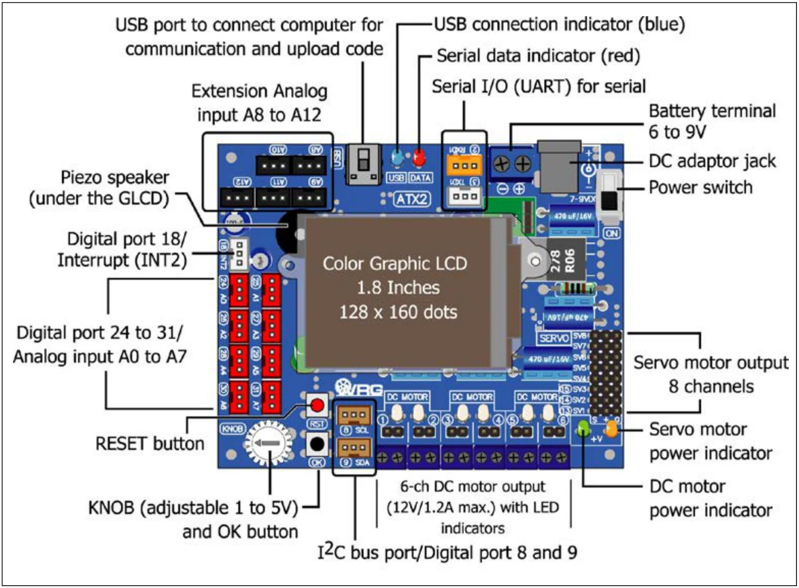

1.1 ATX2 controller board features
In the figure 1-1, it is shown components of the ATX2 controller board and there are significant technical features as follows:
- Main microcontroller is Atmel’s ATmeg644. It features 8-ch 10-bit Analog to Digital Converter, 128-KByte Flash memory , 4-KByte EEPROM, 4-KByte RAM. Operated with 16MHz clock from external crystal
- Define all ports compatible with Arduino I/O standard hardware. The number of port are 0 to 31. All ports available with 3-pin of 2.00mm. header. (+5V, Signal and GND)
- 13 programmable port in JST connector type. Includes Digital I/O port (2, 3, 8, 9, 18, 24 to 31), A/D port (8 : port 24/A0 to 31/A7), Two-wire interface or TWI (8/SCL and 9/ SDA) and UART serial port communication (2/RxD1 and 3/TxD1). Both TWI and UART ports can config to digital input/output port for more I/O applications.
- Extension analog input (A8 to A12) and One variable resistor is labeled KNOB and OK button for ADC experiments. Only these inputs are analog input only.
- All analog supports 0 to +5Vdc input. The converter resolution is 10-bit. The result value is 0 to 1,023 range.
- One of button switch “OK” for simple digital input experiment.

- One piezo speaker
- UART port (RxD1 and TxD1) for interfacing serial module device such as Pixy camera module, servo controller board (Parallax servo controller, ZX-SERVO16i), Real-time clock (ZX-17 : serial real-time clock module)
- 128x160 dots color GLCD. It only supports line-art , color background and text with 21 characters 16 lines (no support the image file).
- 6-ch of DC motor driver with LED indicator. Support 4.5 to 9V motor 1.2A (max)
- 8-ch of Servo motor outputs
- Upload with computer via USB port
- 2 of power inputs ; DC adaptor jack and 2-pin terminal block for battery
- Power switch and RESET switch available
- Requires +6 to 9V 500mA supply voltage in normal operation (no motor driving) and/or at least 1500mA for robotics application.
- +5V switching regualator on-board with polarity protection circuit
Original manual, pages 6–7